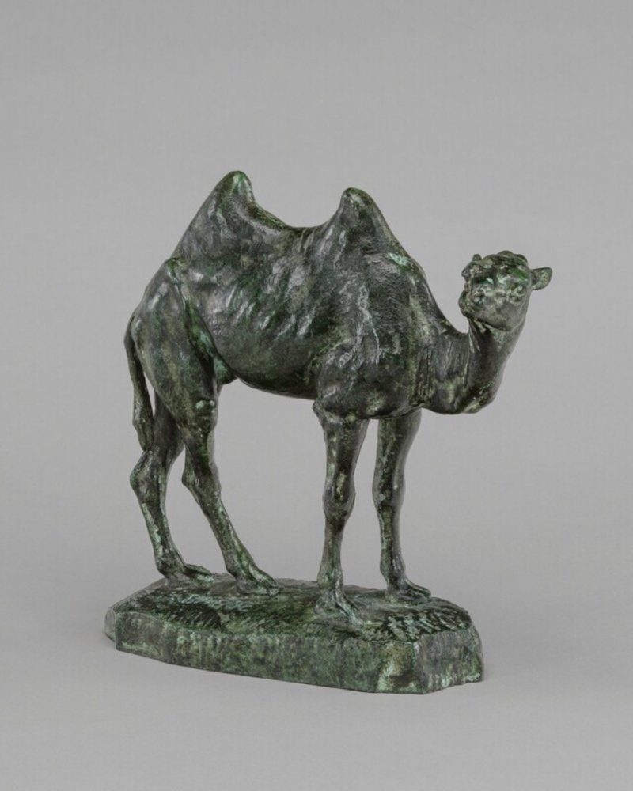

*© National Gallery of Art (nga.gov)
We’re happy to announce the availability of Apache Camel K version 2.11.0. This is a special release as we have decided to move to a new runtime provider, plain-quarkus (ie, the regular Quarkus runtime), in order to upgrade with most recent Camel and Quarkus platform developments. See the warning emoji (⚠️) to understand which new feature can impact the upgrade process.
Camel Quarkus (plain-quarkus) default runtime
In the very first days of the Camel K project (even before Camel Quarkus existed), the team decided to create a special Java runtime, Camel K Runtime which was the unique available runtime back in time. We have supported and defaulted to this runtime until Camel version 4.8.5. We decided to move to a plain regular Camel Quarkus runtime which will provide a smoother experience 100% compatible with regular Camel Quarkus applications, deprecating and eventually remove the old Camel K Runtime project.
From now on, Camel K will run, by default such a runtime.
⚠️ If you were previously running Camel applications with Camel K Runtime and you don’t want the new applications to move to the new default provider (Camel Quarkus), then you need to instruct it in your IntegrationPlatform or IntegrationProfile. Change the .spec.traits.camel.runtimeProvider as quarkus (instead of the new default, plain-quarkus) and .spec.traits.camel.runtimeVersion as 3.15.3 (instead of the new default, 3.39.1).
New default runtime options
As we’ve moved to the new runtime we took the opportunity to introduce new default settings (enhanced security):
- Default context security settings as non root
- Camel health and Prometheus endpoints enabled by default via
camel-observability-servicesdependency - Health trait (Kubernetes Readiness probes) enabled by default
These are the new defaults only if you use the new plain-quarkus runtime provider. You can turn off the health trait if you don’t want to include automatically Readiness probe in your Camel application.
The (positive) side effect of this change is that when you have a Camel Monitor Operator installed, it will automatically be able to scrape all the information and provide the monitoring for your fleet of Camel applications running in the cloud.
⚠️ You may notice the Integration Ready condition slower than before, as, from now on, the application will turn Ready when the probe will confirm Camel application is ready. You can turn this feature off disabling the health trait or the readiness check, although it is not advisable.
If you were already running with plain-quarkus and you need to maintain root access for the upgraded Integrations, you can configure security-context runAsNonRoot as false.
Integration Platform deprecation
We’ve marked the IntegrationPlatform as deprecated. The goal is to simplify the long term maintenance of the project and to make it a more secure environment, avoiding cross namespaces resources (like IntegrationPlatform used to be). We’ve provided a set of environment variable that will be used as default baseline values for your operator installation. Additionally we’ve aligned IntegrationProfile to be able to be feature parity with the IntegrationPlatform and hold a set of common configuration requirements (such as registry configuration, common traits, building requirements) for your Integration resources.
The IntegrationProfile could be secured via RBAC by admin and we’re planning to introduce a default one for each namespace so that, every Integration will be able to use a default profile, when available.
Secure installation by allow lists
Here a security feature that will make your operator stronger. We have provided a few allowlists environment variable which you can configure in order to let your Integration resources to use safely an approved list of resources (the operator environment variable in parenthesis):
- External Maven repositories (
MAVEN_REPOSITORIES_ALLOWED) - Builder Pod Node selectors (
BUILDER_NODE_SELECTOR_ALLOWED_LABELS) - Integration NodeAffinityLabels (
AFFINITY_NODE_LABELS_ALLOWED_KEYS) - Integration Toleration taints (
TOLERATION_TAINTS_ALLOWED_KEYS)
⚠️ if you were previously using those configuration, you may need to provide the allowed resources during the upgrade process.
MultiNamespace watching feature
From now on you will be able to install the operator in “MultiNamespace” mode. This is a nice addition as will let the operator running in a given namespace to reconcile resources in a given set of namespaces. Imagine, the operator is running in operators and will reconcile in tenant-1 and tenant-2 namespaces only. This is more security wise compared to an “AllNamespace” installation, which was the only alternative available so far to reconcile multiple namespaces.
This installation procedure is available in all installation methodologies, and in certain methodologies (Kustomize and Helm) it requires some RBAC management to work correctly.
Enable custom components
Although Camel has a lot of components, sometimes you may want to provide your own component and use it. Now you can do that also in Camel K, see the Camel custom components documentation to learn more.
Add resource request/limit support for init and sidecar containers
When you’re using the init-containers trait, you should now use the new notation (name=<name>;image=<image>;command=<command>;request-cpu=<quantity>;limit-cpu=<quantity>;request-memory=<quantity>;limit-memory=<quantity>) to provide resources and avoid potential resource issues.
Partially reverted Integration (Pod) template deprecation
We are making a partial step back from the previous Integration .spec.template parameter deprecation notice. Its configuration is useful and will be maintained regularly, although it remains deprecated the possibility to merge an external template as the kamel run used to perform.
Support owner trait wildcard
When you’re creating a new Integration you may want to cascade all annotations and labels to the downstream resources (Deployment and Pod). From now on we support the * notation that can be used for that purpose on the owner trait.
Deprecate custom tasks
We have deprecated the support for the custom tasks. We realize that it does not make sense to support this feature as it intersects with the requirements of more well established CICD technologies which can be still supported by Camel K operator for the building part. We have introduced a new operator environment variable, (BUILDER_TASKS_ENABLED, default to false) to control this feature which is likely to disappear in the future.
⚠️ if you were previously using this feature, you may need to change the environment variable to true during the upgrade process.
More deprecations
Here a list of features that are declared as deprecated in 2.11.0 release and will be likely disappear in the future:
- Deprecate
pull-secretauto configuration fromIntegrationPlatformregistry secret. - Deprecate
Integration.spec.profileparameter. - Deprecate
prometheustrait (we suggest to move to Camel Monitor Operator to monitor your integrations) - Deprecate
knative(eventing) trait.
Removals
Here a list of features that were already deprecated and reached their EOL support in 2.11.0 release:
- Maven extensions configuration.
jolokiatrait.- Maven profile configuration.
Main dependencies
The operator was built with Golang 1.26 and the Kubernetes API is aligned with version 1.36. From this version onward we’re adopting the plain-quarkus runtime provider (ie, Camel Quarkus runtime). The default version is the Quarkus Platform version 3.39.1 which is aligned with Camel 4.22.0.
Full release notes
We had done more stuff, here the full 2.11.0 release notes if you want to learn more about this release.
Stats
Here some stats that may be useful for development team to track the health of the project (release over release diff percentage):
- Github project stars: 928 (+1,3 %)
- Docker pulls over time: 2578705 (+4 %)
- Unit test coverage: 63.2 % (+1,6 %)
Thanks
Thanks a lot to our contributors and the hard work happening in the community. Feel free to provide any feedback or comment using the Apache Camel available channels.